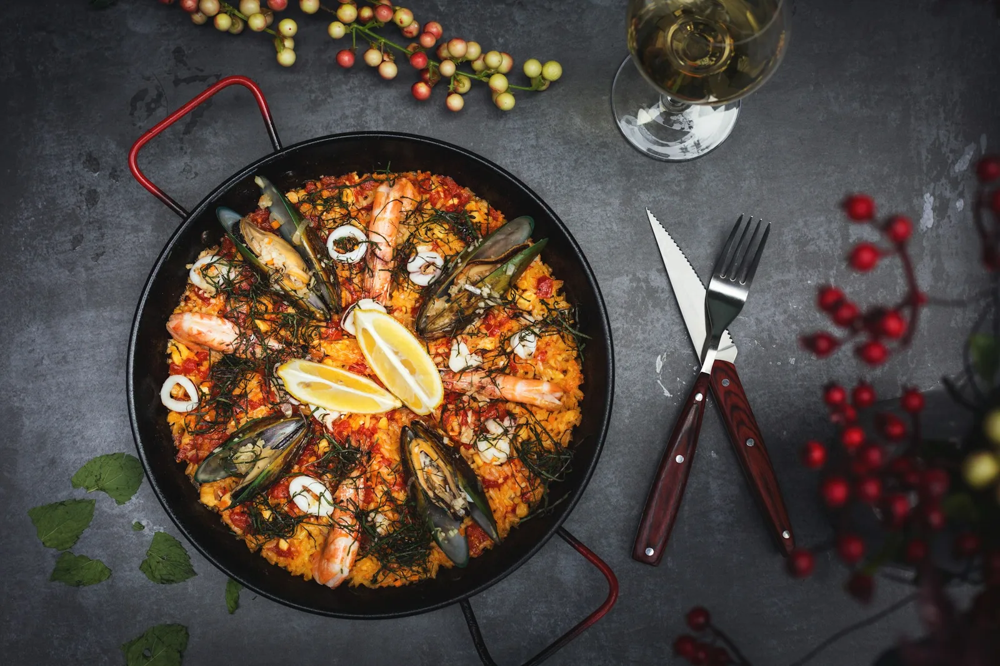
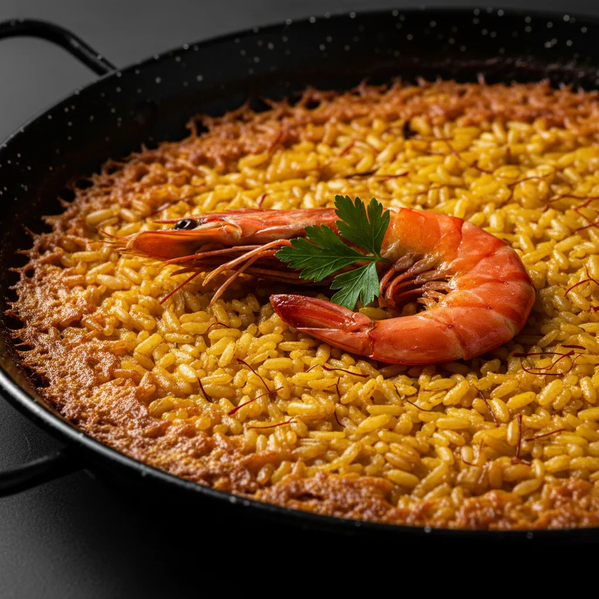
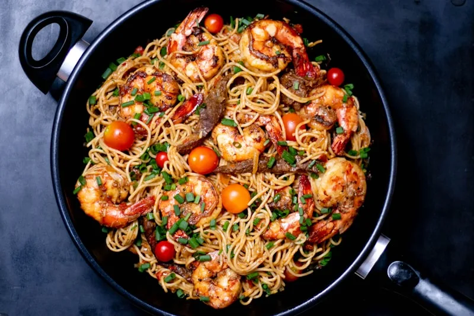
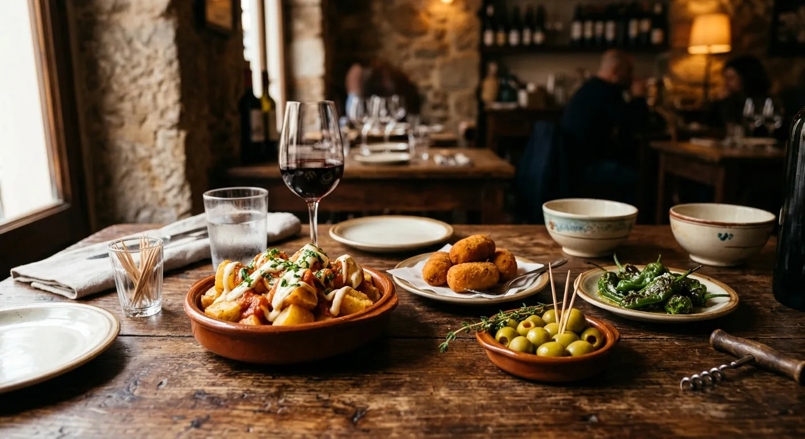
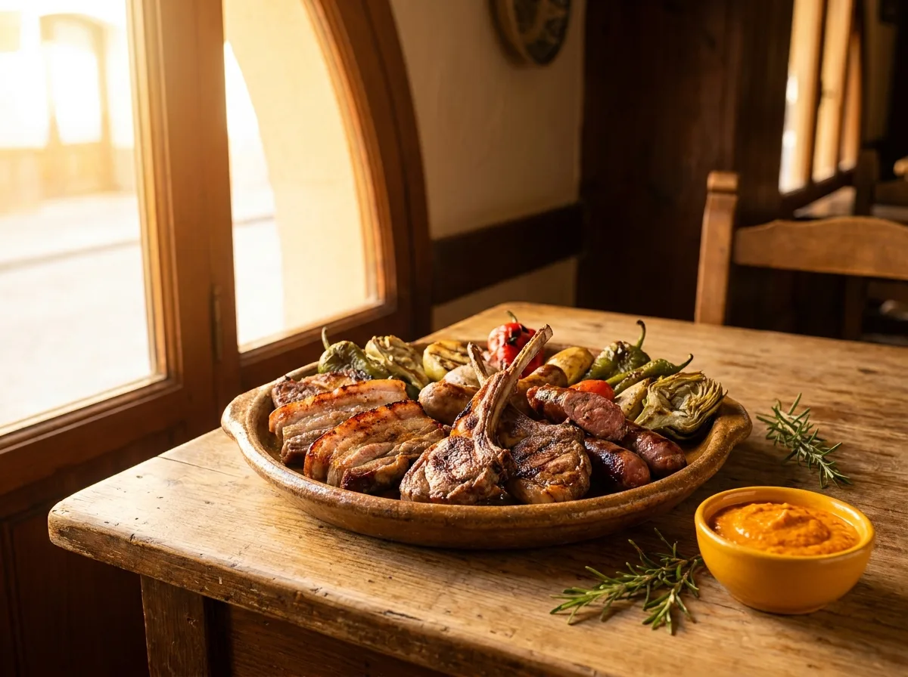
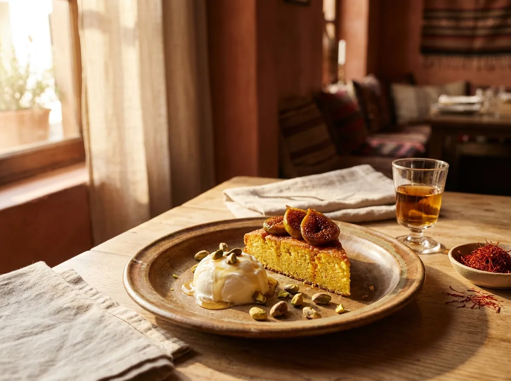

Merluza a la Vasca
En cazuela, salsa verde con ajo, perejil y un toque de vino blanco.
Arrocería · Tapería
Cocina mediterránea · Calpe
“Tengo clientes que en su día eran niños que me pedían un helado y hoy son adultos.” — Juan Francisco Martínez, La Marina, 2019
La historia
El nombre viene del origen del dueño, Juan Francisco, nacido en Villanueva del Arzobispo, Jaén. La cocina, en cambio, es la de la tierra que lo adoptó: arroces de Calpe, fideuá, tapas mediterráneas.
Juan Francisco Martínez Pérez se instaló en Calpe a finales de los años setenta. Pasó diez años aprendiendo el oficio en el Bar Baydal, otros años en el Bar Jaén junto a su cuñado Tomás Medina, y a finales de 1990 abrió las puertas de El Andaluz.
Treinta y cinco años después, sigue trabajando con su mujer Rosa María Díaz y su hija menor Rosa, que toma poco a poco el relevo. En la cocina, José Giraldo, gaditano de oficio, dirige la brigada. En sala, los habituales conocen los nombres de quienes los reciben.
“Tengo clientes que en su día eran niños que me pedían un helado y hoy son adultos.” Juan Francisco Martínez — La Marina, 2019
El reconocimiento llegó con los años. Travelers' Choice de TripAdvisor en 2025, mención como uno de los mejores conjuntos de tapas de Calpe en la Guía Maximín, y — según fuente periodística local — la medalla al mérito empresarial Jaume Pastor i Fluixà en 2015.
Capítulo I
Sugerencias · por encargo
Tres sugerencias por encargo. Lo que llega del puerto, terminado al momento.
Los pescados de sugerencia se preparan por encargo. Para grupos o piezas concretas, conviene avisar con antelación.

Capítulo II
La especialidad
Lo que nos define. La paella se reserva con antelación — se hace al momento, no se anticipa.
Los arroces se elaboran al momento. La paella conviene reservarla con antelación — lo recomiendan los propios clientes en sus reseñas. Para grupos, llamar el día previo.


Capítulo III
Para compartir
La barra de la casa, treinta y dos referencias. Pídela entera o en pequeña ración.
S / M = precio según mercado. Pregunta a sala por la pieza del día. Prueba también el surtido de tapas caseras expuestas en la barra.
Capítulo III · bis
Pan tostado al momento
Pan crujiente y cinco combinaciones. Cuatro euros y medio o menos, todas.

Capítulo IV
Sugerencias · por encargo
Tres carnes por encargo. La del foie es la firma de la casa.
Menú
Para los más pequeños

Capítulo V
Para terminar
Tres clásicos de la casa para cerrar.

Capítulo VI
Bodega y barra
Selección amplia de vinos, sangría de la casa, cafés. Pregunta a sala.
Bodega más amplia que lo que esta hoja recoge: pregunta a sala por la carta completa de vinos.
Información
Pregunta sin reparo: la cocina informa de cualquier ingrediente y adapta la mayoría de los platos.
Existen opciones sin gluten y vegetarianas, incluidas paellas de verduras mencionadas por nuestra clientela. Confirmar siempre con sala antes del pedido.